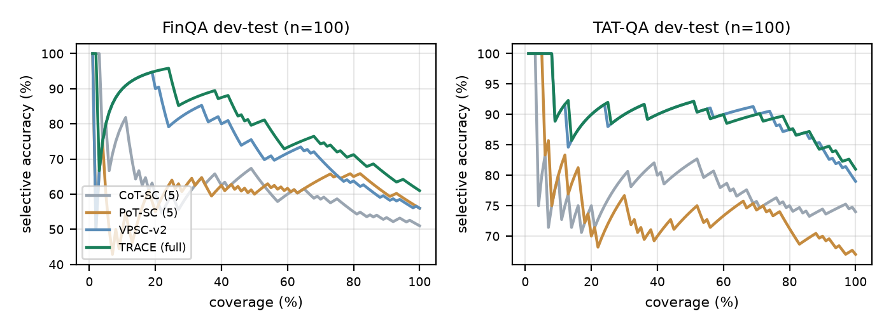

Index Terms—financial question answering, numerical reasoning, program verification, neuro-symbolic reasoning, self-consistency, conformal prediction, small language models
I. INTRODUCTION
Analysts ask numerical questions of annual reports—growth rates, margins, shares of a total. Answering them means finding the right cells, reading them with the right period, unit and sign, and computing the right formula. On FinQA [1] the original fine-tuned system reached 61% execution accuracy against 91% for experts. For confidential documents small open models that run locally are attractive, yet they are the least reliable.
Program-of-Thought (PoT) [2, 3] removes arithmetic errors, and self-consistency [4] votes over samples. In earlier work [5] we added a grounding filter (VPSC): discard sampled programs whose numbers do not occur in the report, then vote. It was precise—every question it flagged was wrong—yet it changed no answer. This paper explains that failure quantitatively and builds a method around the explanation.
Diagnosis. Accuracy is coverage (is the correct answer among the candidates?) minus a selection gap (§). For a small model, same-prompt samples are near-copies: a beta-binomial fit gives an intra-question error correlation of 0.97 for programs, the vote is one point below coverage, and the law predicts that no practical number of samples will help. Worse, most wrong programs pass value-level grounding because they copy a real number from the wrong row, the wrong year, or combine correct numbers with the wrong operation or orientation.
Approach. Trace-PG treats a program not as a string of literals but as a provenance graph: a symbolic formula over typed references to report cells. On this representation we can type-check what the program computes against what the question asks, compare programs by what they compute rather than what number they print, and even complete the computation symbolically. Candidate diversity and repair raise coverage; typed verification, template completion and calibrated selection close the selection gap; conformal abstention and staged escalation make the system safe and cheap to deploy.
Contributions.
- A coverage law for sampling-based reasoning (§): a coverage/selection decomposition and a beta-binomial model whose single parameter, the intra-question correlation ρ, predicts how coverage grows with the number of samples. It fits measured coverage within 0.5 points and shows that same-prompt sampling of small models saturates almost immediately.
- Provenance-graph verification (PGV): symbolic lifting of programs into formulas over typed cell references, and four checks no literal-level audit can express—intent typing of the formula's shape, period checking, temporal orientation (sign errors) and dimensional (scale) analysis—plus structural consensus over canonical formulas.
- Neuro-symbolic template completion: the model's program identifies the evidence row; the question's typed intent and periods determine the formula, which is instantiated over the exact cells without any model call.
- Audit-guided repair with cell-specific external feedback, and heterogeneous views that cut error correlation from 0.91–0.97 to 0.38–0.55.
- Calibrated selection with a conformal guarantee: a verifier over structural features chosen by grouped cross-validation on development data, and conformal risk control [6] that bounds the expected rate of wrong answers.
- Staged escalation with stage-wise calibrated stopping, replayed exactly from logged calls.
- Cell-level attribution: every answer cites the cells it used; we measure citation precision and recall against gold evidence.
- A strict protocol: development and disjoint never-inspected held-out samples, artifacts frozen before held-out runs, paired tests with Holm correction, a second model family, a larger model, numerical perturbation and a new Indian annual-report set.
II. RELATED WORK
Financial numerical reasoning. FinQA [1] and TAT-QA [7] pair report tables and text with multi-step arithmetic questions; ConvFinQA [8], DocFinQA [9], FinanceBench [10] and FinanceReasoning [11] extend the setting. Srivastava et al. [12] evaluate LLM mathematical reasoning on these datasets with a structured extract-then-compute prompt; TAT-LLM [13] fine-tunes for the task. We study training-free inference with small general models.
Programs, tables and sampling. PoT and PAL [2, 3] delegate arithmetic to an interpreter; Binder [14] and Chain-of-Table [15] reason with symbolic operations over tables. Self-consistency [4] votes over samples, adaptive-consistency [16] stops sampling early, and Zhao et al. [17] choose between CoT and PAL. Ensemble diversity is classically linked to accuracy [18]; we turn this into a predictive coverage law for LLM sampling and show that the binding constraint for small models is coverage, not selection.
Verification and correction. Trained verifiers rank solutions [19, 20]. LLMs do not reliably self-correct without external feedback [21] but can with execution or tool feedback [22, 23, 24]. VeriFin [25] checks operands of financial claims against XBRL facts with an SMT solver, and DCRC [26] trains an evidence-auditing agent. PGV needs no structured filing, solver or LLM training: it reads the program's own variable names and formula against the plain report table.
Attribution and abstention. Citation-based attribution [27] and selective prediction [28, 29] make outputs auditable and safe; conformal prediction [30] and conformal risk control [6] give distribution-free guarantees. We provide cell-level citations and a conformal bound on the rate of wrong answers.
III. WHY VOTING CANNOT HELP: A COVERAGE LAW
Let SK(q) be the answers of K candidates for question q, g(q) the gold answer and f any selector. Proposition (Decomposition). Acc(f) = Cov(SK) - Gap(f), where Cov(SK)=Pr[g(q)∈ SK(q)] and Gap(f) = Pr[g(q)∈ SK(q), f(SK(q))≠ g(q)] ≥ 0. Hence Acc(f)≤ Cov(SK) for every filter, vote or verifier. Proposition (Coverage law). Suppose each question has a latent success probability θq \sim Beta(a,b) and K samples are i.i.d.\ Bernoulli(θq) given θq. Then
where ρ is the correlation between the correctness of two samples of the same question. For fixed mean accuracy μ = a/(a+b), Cov(K)→μ for every K as ρ→1. Proof sketch. Pr[all K wrong|θ]=(1-θ)K; integrating against the Beta density gives B(a,b+K)/B(a,b). The intra-class correlation of a beta-binomial is 1/(a+b+1). As a+b→0 with a/(a+b)=μ the Beta mass concentrates on 0,1, so every sample of a question is right or every one is wrong. □
Proposition (Cross-view coverage). For two candidates with error rates e1,e2 and error correlation r, Cov=1-e1e2-r√e1(1-e1)e2(1-e2), so lowering r raises coverage linearly. These statements make the diagnosis testable. We fit (a,b) by maximum likelihood to the four exchangeable T=0.7 samples of PoT-SC and CoT-SC (Table, Fig.). For Qwen3-1.7B, ρ=0.97/0.98 for programs on FinQA/TAT-QA; the law reproduces measured coverage at K=4 within 0.3 points and predicts 58%/68% coverage at K=20. CoT samples are less correlated (ρ=0.76/0.88) but reaching the 75% coverage of Trace-PG's six heterogeneous calls on FinQA would need about 53 CoT samples. Between views, error correlations drop to 0.38–0.55 (vs.\ 0.91–0.97 within a prompt). The design consequence is the structure of Trace-PG: raise coverage with views whose errors differ, and close the gap with evidence that does not count votes.
| Setting | Samples | ρ | Cov@1 | Cov@4 (emp./pred.) | Cov@20 | K75% | K90% |
| FinQAD (100) | PoT | 0.97 | 55.8 | 57.0 / 57.0 | 58.4 | >105 | >105 |
| TAT-QAD (100) | PoT | 0.98 | 65.8 | 67.0 / 67.0 | 67.9 | >105 | >105 |
| FinQAD (100) | CoT | 0.76 | 50.0 | 62.0 / 61.7 | 70.7 | 53 | 14,919 |
| TAT-QAD (100) | CoT | 0.88 | 71.2 | 75.0 / 75.2 | 78.9 | 4 | 46,619 |

IV. METHOD: TRACE-PG
Trace-PG takes a report table T, text P and question q and returns an answer, a confidence, the cells it used, and optionally an abstention (Algorithm).
Candidate generation: heterogeneous views and audit-guided repair
Six calls produce candidates: an operation-guided PoT prompt (greedy and T=0.7) stating when a question asks for a difference, a percentage change, a share or an average; a plain few-shot PoT prompt; few-shot chain-of-thought (greedy and T=0.7); and a decomposition prompt. Programs run in a sandbox (AST whitelist, isolated interpreter, CPU and time limits). A literal-level audit checks that each number occurs in the report (unit- and scale-word-aware), that a variable named revenue_2019 holds the value of the revenue row in the 2019 column (with header detection for repeated and spanning headers), that the columns read lie in the question's span, and that yes/no questions get yes/no answers. A greedy program that fails is repaired once with the audit's findings, e.g. “lease_obligations_2008 = 19, but row lease obligations in column 2008 holds 117”. This candidate generator with tolerance-pooled voting is our intermediate method Trace.
Provenance graphs
Each program is executed symbolically. A numeric literal becomes a leaf when it is report evidence and stays a constant when it is a unit factor (×100, /1000) or a small divisor (/3); this decision depends on the literal's syntactic role. A leaf is bound to the table cell whose row label best matches the variable it initializes (or to a text number), and carries a typed reference: cell coordinates, row label, period (from the column header, forward-filled across spanning headers, or from the row label), unit scale (from “in millions”, “\'000”, crore/lakh) and percent flag. The program's answer becomes a sympy expression over leaves. Lifting succeeds for 99–100% of executed programs. Two programs have the same structural signature when their canonical (cancelled) formulas over cell references coincide, regardless of how literals were typed.
Typed verification
Intent typing. A rule-based parser maps the question to an intent (difference, percentage change, share, ratio, average, sum, CAGR, yes/no). The formula's shape is recognized numerically: a program has shape s if expr/templates is the same non-zero constant at two random positive assignments of its leaves (templates: a-b, (a-b)/b, a/b, Σ ai, 1/nΣ ai, ΣSai-Σ Sai, ΣS ai/Σ Sai, (a/b)1/n-1). A shape incompatible with the intent is a type error. Periods and orientation. Dated leaves must carry periods the question asks about; for changes, the positive term must be the later period, which detects sign errors. Units. Leaves of different scale (“\1.1 billion” in text, a table “in millions”) combined without a power-of-ten conversion are a dimension error.
Neuro-symbolic template completion
When all leaves of a program come from one table row and the question's intent is a change, percentage change, average or sum over named years, PGV instantiates the intent's formula over the exact cells of that row for exactly those years. The language model decides which evidence; the type of the question decides how to combine it. Completion runs without a model call and abstains whenever the row, the year columns or the intent are ambiguous.
Calibrated selection
Candidates are pooled when they agree within 1%. Each pool gets features: audited and flagged program counts, text-view counts, cross-modal agreement, which views agree, typed-check outcomes, structural agreement (largest set of programs with the same signature), template-completion agreement and the Trace weight share. A logistic verifier P(pool correct\midfeatures) is fitted on development data only, with its regularization chosen by 5-fold cross-validation grouped by question; the pool with the highest probability is returned and the probability is the confidence.
Conformal abstention
Let Li(λ)=1[ ci≥λ]·1[answeri wrong] be the loss of answering question i when its confidence ci reaches threshold λ; L is non-increasing in λ and bounded by 1. Given n calibration questions,
Theorem (Conformal risk control [6]). If calibration and test questions are exchangeable, E[Ln+1(λ)]≤α: the expected fraction of questions answered wrongly is at most α. We calibrate on out-of-fold confidences of the development samples, which are drawn from the same test splits as the held-out samples.
Staged escalation
Stage 1 uses the guided program and greedy CoT (2 calls), stage 2 adds the plain program and decomposition with repairs, stage 3 all views. A separate verifier is calibrated for each stage; Trace-PG stops at the first stage whose confidence exceeds τk. The thresholds are the cheapest pair within one point of the best development accuracy. Because every call is deterministic given prompt, temperature and seed, the policy is replayed exactly from logged calls.
- C ← candidates of stage 1 (guided PoT, CoT)
- for k = 1,2,3
- audit and repair programs in C; lift each to a provenance graph G
- type-check G (intent, periods, orientation, units); complete templates
- pool answers; (a, c) ← \arg\max calibrated Pk(pool correct)
- if k<3 ∧ c ≥ τk break
- C ← C \cup candidates of stage k+1
- return a, cited cells of its program, and abstain if c < λ_α
V. EXPERIMENTAL SETUP
Data. FinQA [1], the arithmetic questions of TAT-QA [7], and IndAR, 44 multi-step calculation questions we wrote over statements of four Indian companies with INR crore/lakh units, each gold answer computed from a formula whose operands were checked against the cited PDF page [5]. FinQA-pert re-samples the numbers of 88 FinQA questions and recomputes the gold program [31].
Protocol. Development data are the FinQA and TAT-QA dev samples (50 each) and fixed test samples of 100 each (D), on which VPSC-v2, Trace and Trace-PG were developed. Held-out samples (H) of 200 FinQA and 200 TAT-QA test questions exclude every development question and were never inspected. All code, audit rules, Trace weights, the PGV rules, the verifiers and the conformal and escalation thresholds (artifacts/trace_pg.json) were frozen before the held-out runs completed; no number from them was looked at before freezing. On development data we report cross-validated verifier accuracy; development rows for Trace-PG in Table are in-sample.
Models and baselines. Qwen3-1.7B [32] (4-bit, Ollama, non-thinking); Llama-3.2-3B [33] on a held-out FinQA sample of 100; Qwen3-8B on the FinQA development sample. Baselines share prompts, exemplars and sandbox: few-shot CoT [34], PoT [2], CoT-SC and PoT-SC (5 samples) [4], VPSC [5] and VPSC-v2.
Metrics. Execution accuracy (0.5% tolerance; percent and fraction forms accepted) with 95% bootstrap CIs [35]; exact McNemar tests [36] against Trace-PG (escalated) with Holm correction [37, 38]; tokens and calls per question; conformal coverage and realized risk; citation precision/recall of cited table rows against gold evidence rows.
VI. RESULTS
| Method | FinQAD (100) | TAT-QAD (100) | Tok/q | Calls |
| CoT (few-shot) | 52.0* [42,62] | 73.0 [64,82] | 2.7k | 1.0 |
| PoT | 57.0 [48,67] | 67.0* [58,76] | 2.5k | 1.0 |
| CoT-SC (5) | 51.0* [41,61] | 74.0 [65,83] | 13.7k | 5.0 |
| PoT-SC (5) | 56.0 [46,66] | 67.0* [58,76] | 12.4k | 5.0 |
| VPSC [prior] | 56.0 [46,66] | 67.0* [58,76] | 12.4k | 5.0 |
| VPSC-v2 | 56.0* [47,66] | 79.0 [71,87] | 16.5k | 5.0 |
| TRACE (full) | 61.0 [51,70] | 81.0 [73,88] | 20.2k | 6.2 |
| TRACE (adaptive) | 61.0 [51,70] | 81.0 [73,88] | 14.7k | 4.4 |
| TRACE-PG | 65.0 [55,74] | 81.0 [73,88] | 20.2k | 6.2 |
| TRACE-PG (escalated) | 66.0 [57,76] | 81.0 [73,88] | 12.4k | 3.7 |
Main results. On held-out data Trace-PG (escalated) reaches XX% on FinQA and XX% on TAT-QA (Table), against XX/XX% for PoT, XX/XX% for PoT-SC, XX/XX% for VPSC and XX/XX% for VPSC-v2, using XX calls per question versus 5 for self-consistency. On development data, Trace reaches 61/81% (PoT 57/67%, VPSC 56/67%, CoT-SC 51/74%).
| Setting | Lifted | Base | Type | Period | Orient. | Units | Compl. (fires/acc.) |
| FinQAdev (50) | 100.0 | 51 | 82 (11) | 50 (4) | 100 (2) | 100 (3) | 16 / 88 |
| FinQAD (100) | 99.3 | 49 | 79 (29) | 87 (30) | 100 (2) | 100 (3) | 12 / 58 |
| TAT-QAdev (50) | 100.0 | 29 | 67 (15) | – | 100 (1) | – | 66 / 79 |
| TAT-QAD (100) | 100.0 | 27 | 70 (33) | 75 (4) | – | 100 (1) | 62 / 87 |
Typed verification. PGV's checks catch errors invisible to literal-level grounding (Table): orientation and unit violations are wrong in 100% of development cases, period violations in 50–87% and intent type errors in 67–82%, against base error rates of 27–51%. Template completion fires on 12–66% of questions and is right 58–88% of the time when it does. Held-out: XX.
| Setting | Trace | PG-rules | Trace-PG | PG-esc. | Calls (full) | Calls (esc.) |
| Development (5-fold CV for the selector) | ||||||
| FinQAdev (50) | 62.0 | 60.0 | 62.0 | 62.0 | 6.2 | 3.7 |
| FinQAD (100) | 61.0 | 64.0 | 65.0 | 66.0 | 6.2 | 3.7 |
| TAT-QAdev (50) | 78.0 | 76.0 | 78.0 | 78.0 | 6.1 | 2.5 |
| TAT-QAD (100) | 81.0 | 81.0 | 81.0 | 81.0 | 6.2 | 2.7 |
Selection and cost. Table compares selectors over identical candidates. On held-out data the calibrated verifier changes accuracy by XX points over Trace's fixed weights and staged escalation cuts calls from about 6.2 to XX. Consistent with the coverage law, the largest gains come from the candidate set, not the selector.
| Candidate set | Coverage | Distinct/q | Unan.\ wrong |
| FinQA dev-test (n=100) | |||
| PoT-SC: 5 programs, one prompt | 57.0 | 1.31 | 29.0 |
| CoT-SC: 5 CoT paths, one prompt | 62.0 | 1.56 | 12.0 |
| VPSC-v2: 5 calls, 3 views | 75.0 | 2.11 | 1.0 |
| TRACE: 6 views + repairs | 75.0 | 2.37 | 1.0 |
| TAT-QA dev-test (n=100) | |||
| PoT-SC: 5 programs, one prompt | 67.0 | 1.02 | 31.0 |
| CoT-SC: 5 CoT paths, one prompt | 75.0 | 1.18 | 15.0 |
| VPSC-v2: 5 calls, 3 views | 88.0 | 1.47 | 2.0 |
| TRACE: 6 views + repairs | 90.0 | 1.66 | 2.0 |
| Variant | FinQA dev-test | TAT-QA dev-test | ||
| Acc | Tok/q | Acc | Tok/q | |
| TRACE (full) | 61.0 | 20.2k | 81.0 | 17.5k |
| TRACE adaptive | 61.0 | 14.7k | 81.0 | 9.7k |
| - repair | 61.0 | 19.4k | 81.0 | 17.0k |
| - cell-level audit (v1+v2 checks only) | 62.0 | 19.8k | 81.0 | 17.0k |
| - audit entirely (no filter, no repair) | 59.0 | 19.4k | 81.0 | 17.0k |
| - text views (programs only) | 54.0 | 11.7k | 79.0 | 10.3k |
| - decomposition view | 61.0 | 17.2k | 80.0 | 15.0k |
| - view diversity (guided programs + CoT only) | 54.0 | 14.4k | 78.0 | 12.7k |
| - ans fix | 61.0 | 20.2k | 81.0 | 17.5k |
Coverage and ablations. Same-prompt sampling leaves XX% of held-out questions unanimously wrong; heterogeneous views reduce this to XX% and raise coverage by XX points (Table). Removing the text views or view diversity costs the most accuracy (development: -7 points on FinQA, -2 to -3 on TAT-QA; Table).
| Setting | Flagged | P(wrong|flag) | P(wrong|clean) | Repairs (fix/break) | Accept-path acc (cov.) |
| FinQA dev-test (n=100) | 33 | 97.0 | 42.7 | 21 (1/0) | 75.6 (45%) |
| TAT-QA dev-test (n=100) | 24 | 87.5 | 21.2 | 18 (6/0) | 90.3 (72%) |
Audit and repair. Programs flagged by the literal audit are wrong 97% (FinQA) and 88% (TAT-QA) of the time on development data, against 43% and 21% of unflagged ones; repair turned 1 and 6 wrong programs right and no right program wrong (Table). Held-out: XX.
| Setting | α | Coverage | Risk | Sel.\ acc. |

Guaranteed abstention. With α=0.10, Trace-PG answers XX% of held-out FinQA and XX% of TAT-QA questions, with realized risk XX% and XX% (Table); the vote share of PoT-SC and CoT-SC is a poor confidence signal because correlated samples are confidently wrong (Fig.).
| Setting | Method | Precision | Recall | Exact |
Attribution. Every Trace-PG answer cites its cells. Citations match gold evidence rows exactly for XX% of held-out FinQA answers versus XX% for the PoT baseline (Table); on the FinQA development sample 81% versus 76%.
| (pending) |
Generalization. The ranking holds for Llama-3.2-3B and Qwen3-8B (Table); on IndAR (18-row statements, crore/lakh units) Trace scores XX% (PoT 77.3%) and on FinQA-pert XX% (PoT 55.7%), so gains do not rest on memorized numbers.

VII. DISCUSSION AND LIMITATIONS
What matters. The coverage law and the ablations agree: for small models the decisive lever is which candidates exist. Typed verification and template completion contribute high-precision evidence, structural citations and a confidence that supports guaranteed abstention; their accuracy gain over well-tuned voting is smaller than that of view diversity, and we report it as such.
Limitations. (1) Samples of 100–200 questions give CIs of ±6–10 points, and several pairwise differences are not significant after Holm correction. (2) PGV relies on descriptive variable names and readable tables; text-only operands get value-level checks only, and the intent parser is rule-based. (3) The conformal guarantee is marginal and assumes exchangeability between calibration and test questions. (4) We evaluate small models; frontier models have higher single-call accuracy and looser ceilings. (5) IndAR is small and self-authored; we use the evidence page rather than whole-document retrieval.
VIII. CONCLUSION
Grounding filters and votes cannot help small models because their samples share their errors; a beta-binomial coverage law makes this precise and predictive. Trace-PG raises the ceiling with heterogeneous views and audit-guided repair, and closes the remaining gap by verifying programs as typed provenance graphs, completing formula templates symbolically, selecting with a calibrated verifier and abstaining with a conformal guarantee, while citing the exact cells behind each answer. Summary of held-out gains. Future work: typed grounding of text operands, learned intent parsing, and whole-document retrieval.
IX. REPRODUCIBILITY
Prompts, sandbox, audit, PGV, the frozen verifier and thresholds, every run log (all candidates, audit findings and per-call tokens) and the scripts that produce every table and figure will be released.
REFERENCES
- Zhiyu Chen, Wenhu Chen, Charese Smiley et al., “FinQA: A Dataset of Numerical Reasoning over Financial Data,” Proc. Conf. Empirical Methods in Natural Language Processing (EMNLP), 2021.
- Wenhu Chen, Xueguang Ma, Xinyi Wang et al., “Program of Thoughts Prompting: Disentangling Computation from Reasoning for Numerical Reasoning Tasks,” Trans. Machine Learning Research (TMLR), 2023.
- Luyu Gao, Aman Madaan, Shuyan Zhou et al., “PAL: Program-Aided Language Models,” Proc. Int. Conf. Machine Learning (ICML), 2023.
- Xuezhi Wang, Jason Wei, Dale Schuurmans et al., “Self-Consistency Improves Chain of Thought Reasoning in Language Models,” Proc. Int. Conf. Learning Representations (ICLR), 2023.
- Gaurav Girish, Sunay R Hegde, Dhruvagouda et al., “Numerical Reasoning over Financial Reports: Evaluating Prompting Strategies, Automated Prompt Optimization and Verified Program Self-Consistency with Local LLMs,” Course project report, PES University, 2026.
- Anastasios N. Angelopoulos, Stephen Bates, Adam Fisch et al., “Conformal Risk Control,” Proc. ICLR, 2024.
- Fengbin Zhu, Wenqiang Lei, Youcheng Huang et al., “TAT-QA: A Question Answering Benchmark on a Hybrid of Tabular and Textual Content in Finance,” Proc. ACL-IJCNLP, 2021.
- Zhiyu Chen, Shiyang Li, Charese Smiley et al., “ConvFinQA: Exploring the Chain of Numerical Reasoning in Conversational Finance Question Answering,” Proc. EMNLP, 2022.
- Varshini Reddy, Rik Koncel-Kedziorski, Viet Dac Lai et al., “DocFinQA: A Long-Context Financial Reasoning Dataset,” Proc. 62nd Annu. Meeting of the ACL (Short Papers), 2024.
- Pranab Islam, Anand Kannappan, Douwe Kiela et al., “FinanceBench: A New Benchmark for Financial Question Answering,” arXiv:2311.11944, 2023.
- Zichen Tang, Haihong E, Ziyan Ma et al., “FinanceReasoning: Benchmarking Financial Numerical Reasoning More Credible, Comprehensive and Challenging,” Proc. 63rd Annu. Meeting of the ACL (Long Papers), 2025.
- Pragya Srivastava, Manuj Malik, Vivek Gupta et al., “Evaluating LLMs' Mathematical Reasoning in Financial Document Question Answering,” Findings of the ACL: ACL 2024, 2024.
- Fengbin Zhu, Ziyang Liu, Fuli Feng et al., “TAT-LLM: A Specialized Language Model for Discrete Reasoning over Tabular and Textual Data,” Proc. 5th ACM Int. Conf. AI in Finance (ICAIF), 2024.
- Zhoujun Cheng et al., “Binding Language Models in Symbolic Languages,” Proc. ICLR, 2023.
- Zilong Wang, Hao Zhang, Chun-Liang Li et al., “Chain-of-Table: Evolving Tables in the Reasoning Chain for Table Understanding,” Proc. ICLR, 2024.
- Pranjal Aggarwal, Aman Madaan, Yiming Yang et al., “Let's Sample Step by Step: Adaptive-Consistency for Efficient Reasoning and Coding with LLMs,” Proc. EMNLP, 2023.
- Xu Zhao, Yuxi Xie, Kenji Kawaguchi et al., “Automatic Model Selection with Large Language Models for Reasoning,” Findings of the Association for Computational Linguistics: EMNLP 2023, 2023.
- Ludmila I. Kuncheva, Christopher J. Whitaker, “Measures of Diversity in Classifier Ensembles and Their Relationship with the Ensemble Accuracy,” Machine Learning, 2003.
- Karl Cobbe, Vineet Kosaraju, Mohammad Bavarian et al., “Training Verifiers to Solve Math Word Problems,” arXiv:2110.14168, 2021.
- Ansong Ni, Srini Iyer, Dragomir Radev et al., “LEVER: Learning to Verify Language-to-Code Generation with Execution,” Proc. ICML, 2023.
- Jie Huang, Xinyun Chen, Swaroop Mishra et al., “Large Language Models Cannot Self-Correct Reasoning Yet,” Proc. ICLR, 2024.
- Xinyun Chen, Maxwell Lin, Nathanael Sch\"arli et al., “Teaching Large Language Models to Self-Debug,” Proc. ICLR, 2024.
- Zhibin Gou, Zhihong Shao, Yeyun Gong et al., “CRITIC: Large Language Models Can Self-Correct with Tool-Interactive Critiquing,” Proc. ICLR, 2024.
- Aman Madaan, Niket Tandon, Prakhar Gupta et al., “Self-Refine: Iterative Refinement with Self-Feedback,” Advances in Neural Information Processing Systems (NeurIPS), 2023.
- B. Hall, S. Shome, W. Eiers, “VeriFin: A Neurosymbolic Framework for Verifying LLM-Generated Financial Claims,” arXiv:2608.10213, 2026.
- H. Chen, X. Tang, Q. Liu et al., “Fighting Numerical Hallucinations via Data-Centric Compilation for Online Financial QA,” Proc. ACM SIGKDD Conf. Knowledge Discovery and Data Mining (KDD), ADS Track, 2026.
- Tianyu Gao, Howard Yen, Jiatong Yu et al., “Enabling Large Language Models to Generate Text with Citations,” Proc. EMNLP, 2023.
- Yonatan Geifman, Ran El-Yaniv, “Selective Classification for Deep Neural Networks,” Advances in Neural Information Processing Systems (NeurIPS), 2017.
- Amita Kamath, Robin Jia, Percy Liang, “Selective Question Answering under Domain Shift,” Proc. 58th Annu. Meeting of the ACL, 2020.
- Vladimir Vovk, Alex Gammerman, Glenn Shafer, “Algorithmic Learning in a Random World,” , 2005.
- Iman Mirzadeh, Keivan Alizadeh, Hooman Shahrokhi et al., “GSM-Symbolic: Understanding the Limitations of Mathematical Reasoning in Large Language Models,” Proc. ICLR, 2025.
- An Yang et al., “Qwen3 Technical Report,” arXiv:2505.09388, 2025.
- Aaron Grattafiori et al., “The Llama 3 Herd of Models,” arXiv:2407.21783, 2024.
- Jason Wei, Xuezhi Wang, Dale Schuurmans et al., “Chain-of-Thought Prompting Elicits Reasoning in Large Language Models,” Advances in Neural Information Processing Systems (NeurIPS), 2022.
- Bradley Efron, “Bootstrap Methods: Another Look at the Jackknife,” The Annals of Statistics, 1979.
- Quinn McNemar, “Note on the Sampling Error of the Difference between Correlated Proportions or Percentages,” Psychometrika, 1947.
- Sture Holm, “A Simple Sequentially Rejective Multiple Test Procedure,” Scandinavian Journal of Statistics, 1979.
- Rotem Dror, Gili Baumer, Segev Shlomov et al., “The Hitchhiker's Guide to Testing Statistical Significance in Natural Language Processing,” Proc. 56th Annu. Meeting of the ACL, 2018.